BCIT · COMP4976 · Assignment 2
Final technical documentation and verification — review copy
Abdullah Rehan
Alex Fisher
Prepared November 17, 2026 (Pacific)
Seven-project .NET 10 solution · SQL Server · ASP.NET Identity · Aspire
No Azure deployment required. Start through aspire run.
Prepared for student review. GitHub publishing and submission ZIP creation remain unapproved. Written instructor feedback and actual Copilot activity are unavailable; the report identifies those gaps rather than fabricating them.
The solution contains exactly seven .NET 10 projects: AppHost, ServiceDefaults, Admin, Public, Api, Data and Shared. The AppHost orchestrates Blazor Server Admin, the Public WASM gateway/client, Web API and SQL Server, with resource references, readiness and observability. The gateway is an Aspire-managed file-based runtime, not an eighth solution project. SQL uses the retained named container and persistent volume; no Azure deployment is required.
Admin runs at /admin and calls the shared authorized Data services with a fresh scope/context per operation; it also retains an Aspire-discovered API connectivity probe. API uses those same services behind controllers, safe DTOs and policy checks. Public references Shared only and uses anonymous same-origin API/media requests through the gateway; it has no SQL/EF/Identity/server ServiceDefaults dependency.
Burnaby, Surrey and Richmond are experiences of one reusable WASM application, not separate projects. Their URL slugs resolve municipality IDs. Public queries are scoped to that municipality; administrators' stored Identity scope/assignment governs reads and writes independently of route/body IDs. Super Admin is authorized for system scope; municipal administrators have exactly one tenant. Unknown slugs/foreign record IDs fail safely, and SQL composite candidate/position ownership prevents cross-tenant parent assignments even below the UI.
Shared server ServiceDefaults provide health/discovery/logging/tracing; gateway instrumentation remains server-side and WASM choice telemetry is disabled. Secrets/keys/uploads remain outside the public graph under ignored local storage. Voting-guide choices use municipality-specific native Session Storage and selection-independent public catalog queries; they never enter APIs, URLs, server sessions, logs, SQL or Admin screens.
The ERDs cover all 12 actual SQL tables. PK identifies a primary key; FK a foreign key; UQ a unique index; AK an alternate/principal key; ? a nullable field. Domain parents restrict deletion while referenced. Identity memberships enforce matching user/role scope; claims/logins/tokens retain normal owned cascades. Row versions implement optimistic concurrency. The data dictionary is generated from read-only live SQL metadata and contains schema information only, never stored password hashes or keys.
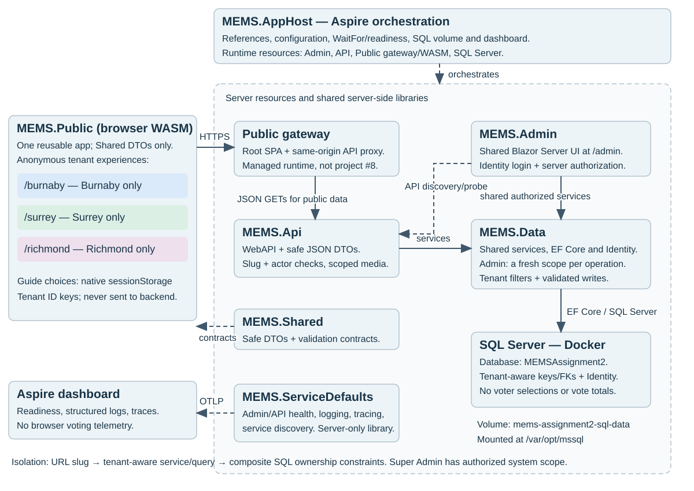
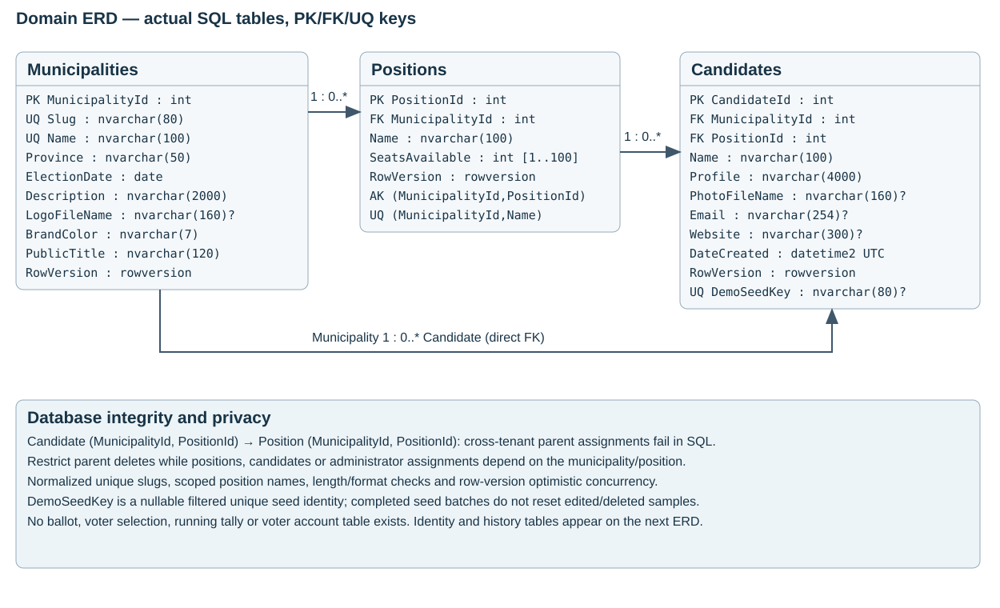
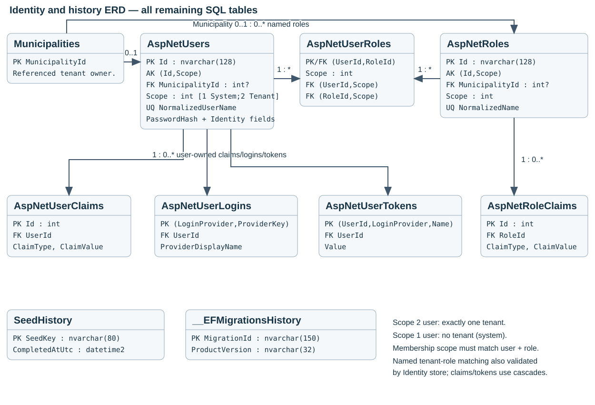
Verified platform: Windows, .NET SDK 10.0.402 / target .NET 10, installed Aspire CLI 13.6.4 and Docker Desktop Linux Engine. SQL image and all package versions remain pinned in the existing project files. Browser tests use the existing workspace Playwright installation and installed Chrome; PDF inspection uses the existing pypdf tool. No Azure deployment is required.
The solution's seven projects are AppHost (orchestration), ServiceDefaults (server health/discovery/observability), Admin (Interactive Server UI), Public (standalone WASM), Api (REST), Data (EF/Identity/services/media/migrations) and Shared (safe contracts). See the rendered architecture/ERDs and generated SQL dictionary. Test C# files are compiled into the existing API under guarded Development CLI modes; they do not form an eighth project.
Preserve the current container/volume and ignored .local secrets, Identity keys and session registry. Start Docker Desktop if needed, then from the solution root:
dotnet restore MEMS.sln dotnet build MEMS.sln --no-restore docker start mems-assignment2-sql aspire run --apphost src/MEMS.AppHost/MEMS.AppHost.csproj --no-build --launch-profile https --non-interactive --nologo
scripts/start.ps1 -NoBuild invokes that Aspire command. Use the already trusted development certificate; no certificate installation/trust modification was needed in verification. Do not use isolated mode or change the SQL resource configuration on this retained environment. Stop AppHost using Ctrl+C and optionally docker stop mems-assignment2-sql; never remove/prune the container or volume.
| Service | Local URL |
|---|---|
| Public discovery | https://localhost:7290/ |
| Tenants | /burnaby, /surrey, /richmond, /pitt-meadows, /maple-ridge on the Public origin |
| Candidate/position directories | /{slug}/candidates and /{slug}/positions; append /{id} for details |
| Personal guide | /{slug}/guide |
| Shared Admin | https://localhost:7252/admin |
| API documentation | https://localhost:7192/api/docs |
| OpenAPI | https://localhost:7192/openapi/v1.json |
| Aspire dashboard | https://localhost:17048 (private login link printed locally) |
The planned source package excludes .local, .tools, Docker data, databases, uploads, keys and credentials. On a genuinely separate clean environment, install the prerequisites, restore/build the solution, run scripts/configure-development-seed.ps1, enter the course development credential through its secure prompt, and launch aspire run as above. AppHost creates a random ignored local SQL secret once; API applies the two existing reviewed migrations and completed-version seed batches to its dedicated Development database. No password is included in source, report, browser assets or command-line examples.
Do not start a second fresh copy against this user's existing fixed container name: the existing SQL secret must remain paired with its volume. A clean-machine first-run test has not been performed; the existing environment's restore/build/startup and schema reproduction via migrations are verified. Assignment 1 baselines and local verification fixtures are environment-owned and are not included in the proposed handoff.
SQL contains five tenants, 15 positions, 30 fictional candidates, five existing administrator accounts and seven roles. Accounts include super, pm, Burnabyadmin, Surreyadmin and Richmondadmin; credentials are obtained from the course/local ignored configuration, not this report. Unique slugs, scoped position names, composite candidate/position ownership and restrictive deletes enforce relationships. One-time seed history preserves sample edits/deletions and existing password changes; startup does not reset records.
Admin/API reuse ASP.NET Identity storage and protected cookie/session mechanisms. Super Admin has authorized system access; a municipal account has exactly one canonical tenant assignment. UI hiding is supplemented by service/policy checks, scoped EF filters, original/current ownership validation and SQL constraints. Admin operations create short-lived DI scopes, avoiding a circuit-long EF context. Cookies are secure/HttpOnly, modifying HTTP requests require CSRF, security stamps and logout revocation are checked, and existing lockout behavior remains. Test authentication uses legitimate sessions, not fake headers or a bypass.
The API exposes Shared DTOs, validation and safe Problem Details rather than EF/Identity entities. Optimistic versions/If-Match protect writes. JPEG/PNG uploads are limited to 2 MB and validated through actual decoding/re-encoding with SkiaSharp; tenant authorization and generated storage paths protect images. Seeded portraits and trusted avatars are preserved. Local upload files are separate from configuration/keys and served through ownership-scoped endpoints.
The page 6 Local Storage wording conflicts with the explicit Session Storage privacy requirements on pages 7–8 and the marking guide. Native sessionStorage and WASM JS interop implement the latter. Candidate IDs are stored under municipality-specific keys; add/remove/clear makes no backend request and changes no URL. The guide fetches the same active-tenant catalog regardless of selections and resolves saved IDs locally, so even record lookup patterns do not disclose a selection list. No ballot table, vote API, running tally or administrator choice screen exists.
Normal same-tab navigation/refresh persists choices. Independent tabs start empty; opener/duplicate/session restore behavior follows the browser and can copy/restore session state. Clear guide removes the active tenant's key. Storage errors have no server/persistent fallback. Print opens native browser preview, hides controls and includes municipality, election date, candidates, positions and local print date; intentional prints/PDFs exist outside session storage. No arbitrary count cap is imposed because the PDFs do not explicitly require one.
The final verification matrix records fresh Phase 7 runs of the existing scripts; engineering histories remain under docs/phase1 through docs/phase6. Owned CRUD accounts/records are cleaned and complete record/password fingerprints checked. Read-only SQL metadata exports contain no Identity row values. SQL allocation counters may advance during owned/rollback tests; byte-identical database files are not claimed. The historical Phase 3 container-instance replacement retained its volume and data; Phase 7 verifies the current ID without claiming that older instance survived.
Physical printer output, Safari/Firefox, real mobile hardware, full screen-reader/WCAG audit, clean-machine installation and public deployment were not performed. The current local session registry/Windows DPAPI design was verified for this single-machine environment, not a multi-host production deployment. No COMP4977/JWT integration requirement was assumed. These limits and outstanding feedback/Copilot/publication items are explicit in the readiness checklist.
Verified against live OpenAPI and actual HTTPS request results in evidence/openapi.json and evidence/api-results.json. This current reference supersedes the historical Phase 3 scaffold/mount descriptions.
Direct base: https://localhost:7192. Public transport: https://localhost:7290/mems-public/api/mems-api followed by the canonical /api/... path. Root tenant UI lives at https://localhost:7290/{slug}; the legacy /mems-public/ entry redirects to the root.
| Method | Route | Documented statuses |
|---|---|---|
| GET | /api/auth/csrf | 200 |
| POST | /api/auth/login | 200, 400, 401, 403, 429 |
| GET | /api/auth/me | 200, 401, 403 |
| POST | /api/auth/logout | 204, 400, 401 |
| GET | /api/{slug}/candidates | 200, 400, 401, 403, 404, 409, 500 |
| POST | /api/{slug}/candidates | 201, 400, 401, 403, 404, 409, 500 |
| GET | /api/{slug}/candidates/{id} | 200, 400, 401, 403, 404, 409, 500 |
| PUT | /api/{slug}/candidates/{id} | 200, 400, 401, 403, 404, 409, 500 |
| DELETE | /api/{slug}/candidates/{id} | 204, 400, 401, 403, 404, 409, 500 |
| GET | /api/foundation | 200 |
| GET | /api/{slug}/candidates/{id}/photo | 200, 400, 401, 403, 404, 409, 413, 500 |
| POST | /api/{slug}/candidates/{id}/photo | 200, 400, 401, 403, 404, 409, 413, 500 |
| DELETE | /api/{slug}/candidates/{id}/photo | 200, 400, 401, 403, 404, 409, 413, 500 |
| GET | /api/{slug}/municipalities/{id}/logo | 200, 400, 401, 403, 404, 409, 413, 500 |
| POST | /api/{slug}/municipalities/{id}/logo | 200, 400, 401, 403, 404, 409, 413, 500 |
| DELETE | /api/{slug}/municipalities/{id}/logo | 200, 400, 401, 403, 404, 409, 413, 500 |
| GET | /api/municipalities | 200, 400, 401, 403, 404, 409, 500 |
| GET | /api/{slug}/municipalities | 200, 400, 401, 403, 404, 409, 500 |
| GET | /api/{slug}/municipalities/{id} | 200, 400, 401, 403, 404, 409, 500 |
| GET | /api/admin/municipalities | 200, 400, 401, 403, 404, 409, 500 |
| POST | /api/admin/municipalities | 201, 400, 401, 403, 404, 409, 500 |
| GET | /api/admin/municipalities/{id} | 200, 400, 401, 403, 404, 409, 500 |
| PUT | /api/admin/municipalities/{id} | 200, 400, 401, 403, 404, 409, 500 |
| DELETE | /api/admin/municipalities/{id} | 204, 400, 401, 403, 404, 409, 500 |
| GET | /api/{slug}/positions | 200, 400, 401, 403, 404, 409, 500 |
| POST | /api/{slug}/positions | 201, 400, 401, 403, 404, 409, 500 |
| GET | /api/{slug}/positions/{id} | 200, 400, 401, 403, 404, 409, 500 |
| PUT | /api/{slug}/positions/{id} | 200, 400, 401, 403, 404, 409, 500 |
| DELETE | /api/{slug}/positions/{id} | 204, 400, 401, 403, 404, 409, 500 |
Health/liveness and readable docs may be excluded from the generated operation list: /health, /alive, /api/docs; machine-readable spec is /openapi/v1.json. These are operational endpoints, not missing domain CRUD.
Anonymous users can read public discovery/election/media DTOs. Authenticated municipal API requests remain restricted to the stored assignment even on GET; the Public app deliberately omits credentials for anonymous information browsing. Super Admin alone manages municipalities; positions/candidates require the assigned municipal actor or Super Admin. Unknown slugs and foreign IDs fail safely. Client-supplied IDs or role headers cannot grant scope.
Legitimate cookie flow: GET /api/auth/csrf; POST /api/auth/login with local credentials and X-CSRF-TOKEN; obtain a fresh principal-bound CSRF token; retain the Secure/HttpOnly Identity cookie. Modifying cookie requests require the token; PUT/DELETE/media changes also need the current quoted If-Match version. Do not put real credentials, cookie values or tokens in shared examples or a client asset. No JWT or new authentication mechanism was introduced.
Candidate POST/PUT request (illustrative position ID; resolve an authorized actual parent first):
{
"positionId": 1,
"name": "Fictional Example Candidate",
"profile": "Public election biography.",
"email": "candidate@example.test",
"website": "https://example.test"
}
Position request:
{ "name": "Councillor", "seatsAvailable": 6 }
Municipality request (Super Admin):
{
"slug": "example-town",
"name": "Example Town",
"province": "British Columbia",
"electionDate": "2026-10-17",
"description": "Fictional election information.",
"brandColor": "#245678",
"publicTitle": "Example Town election guide"
}
The actual public response and validation/error examples below are exported from live requests; concurrency versions are public opaque DTO fields, not credentials.
{
"items": [
{
"candidateId": 14,
"municipalityId": 2,
"positionId": 1,
"name": "Adrian Solano",
"profile": "Adrian Solano is an invented community enterprise manager seeking the mayor's office in this fictional Burnaby election. His sample background combines organizational budgeting, staff supervision, and partnerships between local services. He proposes a practical review of municipal service delivery, with plain-language information about costs, waiting times, and planned improvements. Adrian also emphasizes balancing new development with reliable infrastructure and accessible recreation spaces. He would encourage public meetings that welcome different perspectives and explain which issues require cooperation with other levels of government. His fictional interests include supporting neighbourhood business areas and making community facilities easier to navigate. Away from work, he enjoys recreational cycling and volunteering at events that bring residents together across generations.",
"email": "candidate@example.org",
"website": "https://example.org",
"dateCreated": "2026-11-16T00:46:07.7416019",
"photoUrl": "/api/burnaby/candidates/14/photo",
"isFictionalSample": true,
"version": "AAAAAAAANtQ="
},
{
"candidateId": 15,
"municipalityId": 2,
"positionId": 2,
"name": "Mei Tanaka",
"profile": "Mei Tanaka is a fictional transportation planner and community arts volunteer running for a council position in the Burnaby sample election. Her imagined work focuses on how people reach everyday destinations, including those who walk, use mobility aids, cycle, or rely on transit. She proposes reviewing municipal street crossings, connections to public facilities, and the clarity of information about neighbourhood construction. Mei also supports accessible arts and recreation opportunities as part of healthy community life. She would ask council reports to explain how proposed projects affect different users and how their maintenance will be funded. Outside this fictional campaign, she enjoys drawing, visiting local parks, and helping volunteers organize small, inclusive neighbourhood exhibitions.",
"email": "candidate@example.org",
"website": "https://example.org",
"dateCreated": "2026-11-16T00:46:07.74262",
"photoUrl": "/api/burnaby/candidates/15/photo",
"isFictionalSample": true,
"version": "AAAAAAAANtU="
},
{
"candidateId": 18,
"municipalityId": 2,
"positionId": 3,
"name": "Patrick Rowden",
"profile": "Patrick Rowden is an invented retired technical college administrator and literacy volunteer seeking a school trustee position in this fictional Burnaby election. His sample background includes facilities planning, program evaluation, and explaining institutional budgets. He proposes school board discussions that connect long-term spending decisions with student learning needs and equitable access to resources. Patrick supports listening to students, educators, families, and support staff before deciding which improvements should take priority. He distinguishes board oversight from the work of principals and teachers and values clear public reporting on district goals. His fictional interests include practical learning opportunities, accessible libraries, and intergenerational volunteering. Outside this demonstration campaign, he enjoys restoring furniture and participating in neighbourhood reading circles.",
"email": "candidate@example.org",
"website": "https://example.org",
"dateCreated": "2026-11-16T00:46:07.7453411",
"photoUrl": "/api/burnaby/candidates/18/photo",
"isFictionalSample": true,
"version": "AAAAAAAANtg="
}
],
"page": 1,
"pageSize": 3,
"totalCount": 6,
"totalPages": 2
}
{
"title": "Bad Request",
"status": 400,
"detail": "Choose a position in this municipality.",
"traceId": "00-7f84e5560ab69ae56879ad7cd311a633-1107be0cfd629b6c-01"
}
{
"title": "Not Found",
"status": 404,
"detail": "Municipality not found.",
"traceId": "00-b5370cb1bc7c2f827bfc8e5a9fff27fa-bd7d202f5ef27106-01"
}
{
"title": "Unauthorized",
"status": 401,
"detail": "Unauthorized",
"traceId": "00-dd287a27a508e55f7964ca70ee15eb3d-8c3b9d2a3efc9b07-01"
}
{
"title": "Forbidden",
"status": 403,
"detail": "This municipality is outside your assignment.",
"traceId": "00-219cc20f5efb62c8bcc593180cb369fa-4d932acaedc5be9b-01"
}
Candidate queries support search, positionId, page, pageSize (1–100) and sort=name|created, with stable ID tie-breaking. Slugs are normalized and unique; names/biographies have bounded lengths; contact URLs/email, seats and parent ownership are validated in UI/services/API and appropriate SQL constraints. Unknown JSON properties are rejected. DTOs exclude EF navigations, Identity rows, password hashes, connection strings and filesystem names.
Expected responses include 200/201/204 success; 400 safe validation/CSRF errors; 401 unauthenticated; 403 forbidden; 404 unknown/foreign record; 409 duplicate/dependency/concurrency conflict; generic 500 without internal details. Oversized/unsupported/spoofed media is rejected and cookie modifications require HTTPS. POST/PUT/DELETE and media scenarios are exercised by the fresh regression suite, not the screenshots alone.
Full safe model definitions are included in the OpenAPI snapshot. The endpoint tests cover all domain CRUD, uploads, scope, error and authentication requirements without exposing a voter-selection endpoint.
Team: Abdullah Rehan and Alex Fisher. Evidence source: the student's statements in this conversation. The user reported 97/100 and explained that the three-mark deduction was for a missing ERD in the report, adding that it was not believed to be code-related. No written instructor marking sheet or feedback report was supplied or found; the grade/deduction cannot be independently authenticated here.
| Issue | Original problem | Resolution and evidence | Status |
|---|---|---|---|
| Missing report ERD (student-reported three-mark deduction) | Assignment 1's report omitted the entity relationship diagram | Final Assignment 2 report embeds rendered domain and Identity/history ERDs, linked editable SVGs and an actual SQL data dictionary. Diagrams describe the present SQL Server schema and tenant constraints | Corrected in the prepared report; student review required |
| Other instructor-reported code deficiencies | None available in the supplied feedback | No validation, security, UI or data-integrity defects are invented or attributed to the instructor | Written feedback unavailable; no claim of exhaustive feedback reconciliation |
The SQL Server, Blazor, API, multi-tenant and Session Storage changes are Assignment 2 modernization requirements and verified engineering work. They are not presented as fixes for undocumented Assignment 1 grading comments. Assignment 1 source, SQLite data, credentials, Git history and Azure deployment remain untouched.
Team: Abdullah Rehan and Alex Fisher, confirmed by the user. The session history and checked project evidence establish OpenAI Codex assistance. Actual GitHub Copilot use has not been confirmed; the presence of .github/copilot-instructions.md and prompt files does not prove Copilot activity. Individual student contribution allocation was not supplied and is not inferred.
The following concise summaries use the actual Phase 1–6 requests and preserved prompt files. Each covers the request, technologies and observed output without reproducing the lengthy original prompts. Original prompt files are unchanged.
We asked Codex to create a compiling, locally runnable foundation with exactly seven .NET 10 projects, Blazor Server Admin, standalone WASM Public, Web API, SQL Server and Aspire. Codex used the existing SDK/Aspire tooling, PowerShell, NuGet restore/build, Docker and browser checks to scaffold references, browser-safe gateway routing, health checks, logging and tracing. It helped verify Admin/Public/API connectivity and persistent Assignment 2 SQL storage while keeping Assignment 1 read-only (docs/phase1-verification.md).
We asked Codex to adapt the original election entities and fictional sample content into SQL Server/EF Core, add multi-tenant relationships and Identity accounts, and preserve data across repeat seeding. EF Core CLI, SQL Server, Identity, Code First migrations, PowerShell and focused database checks produced two reviewed migrations, constrained tenant relationships and idempotent seed batches for five municipalities and 30 candidates. Codex helped verify hashing/roles, negative SQL constraints, scoped queries and actual restart persistence (docs/phase2-verification.md).
We asked Codex for tenant-aware REST CRUD, shared DTO validation, legitimate Identity authentication/authorization, secure media handling and OpenAPI. ASP.NET WebAPI, EF/Identity services, cookie/CSRF policies, SkiaSharp image validation and Playwright-driven HTTP/browser tests produced the documented endpoints and security checks. Codex helped verify foreign-ID rejection, actor scope, validation, safe errors, image rules and preserved records/passwords; no hypothetical iOS JWT or deployment requirement was assumed (docs/phase3-verification.md).
We asked Codex to convert the existing administration functionality into responsive Blazor Server components at /admin, reusing the shared security and data services. Blazor forms, Bootstrap, Identity, short-lived EF scopes and real browser tests produced login/logout/password workflows, scoped dashboard totals and municipality/position/candidate CRUD with media. Verification covered municipal permissions, interactive-circuit/session protection, concurrency, validation, mobile layouts and cleanup of owned test records (docs/phase4-verification.md).
We asked Codex to build reusable tenant public experiences at root slug routes, with dynamic discovery, positions, profiles, images, API search/filtering and pagination. Blazor WASM, Shared DTOs, the existing Aspire gateway and anonymous HTTP clients produced the public pages without server/database dependencies or embedded secrets. Playwright and database-preservation checks verified all five tenants, routing/history, portraits, tenant isolation, accessibility controls and real Admin-to-Public synchronization (docs/phase5-verification.md).
We asked Codex to add anonymous per-municipality guides using native browser sessionStorage, never sending choices to APIs, URLs, logs or SQL. WASM JS interop, Bootstrap, print CSS, native Chrome preview, Playwright and pypdf verification produced add/remove/clear behavior, stale-record handling and Letter/A4 guides containing all five required fields. Codex helped verify zero-request choice changes, selection-independent catalog loading, browser lifecycle, all prior regressions, preserved data and actual aspire run startup (docs/phase6-verification.md).
The current request asks Codex to audit real rubric deliverables, consolidate diagrams/report/API and deficiency documentation, curate real evidence, rerun verification and prepare safe publishing/submission plans. Tools used are workspace reads/edits, PowerShell, .NET/Aspire/Docker, existing browser/PDF tools and read-only Git inspection; no Git initialization, commit, push, Azure deployment or submission ZIP is authorized. The final verification report distinguishes current test outcomes from historical evidence and lists unresolved attribution/feedback gaps.
Codex helped turn the staged requests into concrete source changes, reproducible tests and documentation, and exposed errors through actual builds/browser/database checks rather than claiming unperformed success. Documented problems include package compatibility/security patch selection, the historical Phase 3 container-instance replacement while retaining its volume, root gateway routing, Blazor binding/focus behavior and test-harness/native-preview adaptation. No productivity percentages or time savings were measured. All generated outputs require student review; these records establish Codex assistance, not instructor approval or a Copilot usage claim.
Fresh verification completed November 17, 2026 (Pacific). The existing application features were preserved: all 151 files under the seven application projects match the Phase 7 starting hashes. No new application project, entity, API, migration, role policy or credential was introduced. Historical Phase 1–6 reports remain available separately; results below identify current Phase 7 checks.
| Check | Fresh result / evidence |
|---|---|
| Complete restore/build | Seven .NET 10 projects; 0 warnings, 0 errors (artifacts/phase7/restore.txt, build.txt) |
| Installed toolchain/start | SDK 10.0.402; Aspire CLI 13.6.4; actual aspire run startup/restart with existing certificate and retained resources |
| Package/model check | No known vulnerable packages reported for all seven projects including transitives; no pending EF model changes |
| Infrastructure regression | Five groups passed: SQL-backed readiness, real Admin interactivity, WASM/reload/gateway/config privacy and dashboard logs/traces |
| Database/Identity regression | Original five tenants, 15 positions, 30 candidates, five users, seven roles; scoped queries, Identity assignments/hashing, 20 SQL constraint rejections, restrictive deletes, rollback reseed/lockout and idempotence passed |
| API regression | Nine groups passed for CRUD, validation, parent/tenant ownership, forged IDs, concurrency, media, OpenAPI, safe DTO/errors, cookies, CSRF/origin, logout and owned-account lockout |
| Browser API security | Four groups passed: legitimate login, own/foreign data/media, CSRF rejection/logout and HttpOnly boundaries |
| Admin regression | Nine browser groups and four accessibility/observability groups passed; all five original logins, scoped totals/CRUD/media, owned password workflow, tenant/circuit/session checks and cleanup |
| Public regression | Nine main groups and five navigation groups passed for all tenants, portraits/avatars/logos, directories/profiles, search/filter/order/paging, history/refresh/errors, anonymous media, Admin sync and delayed tenant changes |
| Personal guide/privacy | 11 groups passed, 123 observed anonymous GET API requests, zero browser page errors; choice changes generated zero API requests and identical catalog traffic for empty/populated guides |
| Guide storage cases | Duplicate/concurrent add/remove, tenant-only clear confirmation, same-tab refresh, independent/opener tabs, stale/foreign IDs, invalid/blocked/quota storage and safe metadata failure passed |
| Guide live data sync | One owned candidate selected, edited to a 100-character name/new position and deleted; refreshed guide reflected changes/pruned stale ID. Record cleaned; public choices never written to API |
| Printing/PDFs | Six fresh Letter/A4 outputs passed dimensions/required-field/control/page-break inspection; populated/empty documents one page, 32 long-name rows five pages on each size |
| Native print preview | Fresh workspace browser profile passed Letter and A4; cancelled without printing. An initial reused-profile automation context closed; the clean-profile retry passed without application changes |
| Real screenshot/API verification | All five categories captured; actual API statuses 200,400,404,401,403; live OpenAPI contains 29 operations; SQL export is clearly labelled real read-only query results, not SSMS or a mockup |
| SQL metadata | Exactly 12 original tables, two original migrations, no ballot/vote/selection columns; actual column/key/FK dictionary exported without Identity row values |
| Actual restart | Same SQL container and Aspire restarted; owned candidate contents/date/row version, changed test password/hash and whole probe fingerprint survived; only owned probes removed |
| Browser/auth restart | A real open tab retained its local choice across restart; a legitimately logged-out cookie remained rejected |
| Record/password preservation | Election, user, role/membership and seed-history record fingerprint matches the original completed Phase 2 checkpoint; no active fixtures remain |
| Source/secrets | All 151 application files, original Phase 1–6 prompts and both development secret files match starting hashes; 434 public source/built assets contain none of the known development secrets |
| Assignment 1 | All 2,732 files match SHA-256, size and last-write-time baseline, including SQLite and Git files; no application commands or writes there |
The current retained container is mems-assignment2-sql, ID e7fd02edfdaa499fb8c6ca179b91c3e680cd069787270457bdda608932ec7a26; volume mems-assignment2-sql-data mounted at /var/opt/mssql; database MEMSAssignment2. No Phase 7 replacement occurred. The older Phase 3 replacement of the original Phase 2 instance is acknowledged, not claimed undone. Original row values/hashes are compared; SQL allocation counters can advance during owned/rollback tests, so byte-identical database files are not asserted.
The schema migrations remain 20261116003601_InitialSqlServerIdentityTenancy and 20261116004505_FixHyphenatedSlugsAndAssetNames. API initialization remains limited to the intended Development database and completed-version seeds. No schema reset, volume deletion, imports or original-password reset occurred.
Machine-readable results and debug outputs are ignored under artifacts/phase7; sanitized SQL/OpenAPI/API exports and curated screenshots are under docs/final/evidence. Source/private test baselines and fixture credentials remain ignored under .local. The publication audit checks the proposed source/report allowlist without initializing Git or creating an archive. The final source inventory and dry-run manifest accompany this report.
No functional application blocker was found in the exercised checks. Physical printers, Safari/Firefox, real phones, full screen-reader/WCAG audit and a clean-machine first run were not tested. Written instructor feedback, actual Copilot activity and individual contribution allocation are unavailable. GitHub repository/access, a final submission ZIP, archive extraction/upload and publishing remain unperformed pending approval. No Azure deployment is required or performed.
The marking guide on page 16 totals 100 marks. This matrix maps requirements to implementation/evidence; it does not predict a grade or award marks.
| Category | Marks | Implementation / evidence | Review status |
|---|---|---|---|
| Multi-tenant architecture and isolation | 10 | Root tenant routes; stored actor assignments; scoped services/EF; composite SQL ownership; architecture and ERDs; foreign-ID tests | Implemented and verified locally |
| Blazor Admin application | 15 | Shared /admin, real Identity workflows, dynamic dashboards, CRUD/media/search/paging, safe circuit lifetimes | Existing feature set preserved; fresh regression |
| Election privacy / Session Storage | 5 | Native browser sessionStorage, local-only choices, neutral catalog queries, no SQL/API storage, lifecycle/error/print tests | Explicit pp7–8 privacy requirement followed; p6 wording conflict documented |
| Blazor WASM Public application | 15 | Reusable dynamic tenants, branding, directories/profiles/media, search/filter/order/pagination, guides and printing | Existing source preserved; fresh browser evidence |
| ASP.NET WebAPI | 10 | Complete domain CRUD, safe Shared DTOs, cookie/CSRF/scope, media, current OpenAPI/reference and actual statuses | Fresh API/docs verification |
| SQL Server and EF Core | 10 | Docker volume, Code First migrations, one-time seeds, Identity, constraints and services; actual metadata/data dictionary | Source unchanged; schema/data/persistence checks |
| Authentication and authorization | 10 | Super/municipal roles, canonical assignment, cookie/stamp/logout/lockout and backend tenant checks | Legitimate authentication tests; no bypass |
| .NET Aspire integration | 10 | Actual aspire run; references/readiness/health, dashboard/logs/traces, SQL orchestration | Local CLI startup verified; no Azure required |
| Assignment 1 deficiencies and best practices | 10 | Reported missing ERD corrected by embedded current ERDs; validation/security/data-quality tests documented | Written grading feedback unavailable; only user-reported deduction attributed |
| Documentation and Copilot usage | 5 | Consolidated PDF, diagrams, technical/API/schema references, screenshots, actual prompt files and concise AI summaries | Documents prepared; actual Copilot use unverified (Codex confirmed) |
| Total | 100 | No self-assigned score | Instructor assessment remains independent |
- Seven-project solution, migrations, seed source and safe public assets preserved; no application feature rewrite.
- Report PDF and editable offline sources include Aspire architecture, all-table SQL ERDs, API examples/statuses, real screenshots and honest deficiency/AI records.
- Team names confirmed: Abdullah Rehan and Alex Fisher. Individual contribution allocation was not supplied or inferred.
- Required screenshot categories: Aspire, Admin, Public, API testing and SQL Server; provenance distinguishes actual app captures from actual request/query exports.
- Fresh build/startup, regressions, privacy and integrity outcomes are recorded in the verification section and machine-readable evidence.
- .gitignore strengthened; source/curated-document allowlist and known-secret scan prepared without staging or packaging.
- Review the generated PDF, image legibility, schema accuracy, wording and all team/AI attributions.
- Written instructor feedback is unavailable; no other grading deductions or corrections may be fabricated. Reconcile actual written comments later if supplied.
- Actual GitHub Copilot activity remains unverified. The rubric requires it; the report accurately documents Codex and does not imply that instructions/prompts establish Copilot use. Student/instructor review must resolve this compliance gap.
- Instructor-accessible GitHub repository has not been initialized or created. Owner/name/access, commit and publishing must be approved before action.
- Final submission ZIP, archive inspection/extraction and upload have not occurred and require approval. No Azure deployment is required.
- Clean-machine first-run, real printer output, Safari/Firefox, real mobile devices and full screen-reader/WCAG audit were not performed; local Chrome/PDF/browser tests do not claim those results.
Stop for review here. The publishing/package plan describes later authorized steps; it is not permission to execute them.
This is a review-only plan. No Git initialization, staging, commit, push, repository creation, publishing, deployment or final ZIP has occurred. The workspace is not currently a Git repository, so there are no tracked/indexed files, remote configuration or commit history to review here. Assignment 1's Git repository must not be used or changed.
The dry-run manifest lists paths, sizes and SHA-256 hashes for reviewable source/documentation candidates. Include the seven-project solution, project/source/static assets, reviewed migrations and fictional seed data, tests, verification/start scripts, global SDK/NuGet configuration, README, AGENTS, .gitignore, original .github instructions/prompts and final documentation/diagrams/curated evidence. Keep historical phase documents where the final report references them. No eighth project or copied application database is needed.
Exclude .local, .tools, raw artifacts, all bin/obj and node_modules, local IDE settings, appsettings Development/Local/Production overrides, .env, secrets, private keys/certificates, SQL/SQLite files or backups, runtime logs/dumps, browser profiles, authentication/session state and generated archives. Do not copy Docker volumes, the Identity key ring or uploads. The root assignment handout and long starter prompt remain in the workspace but are excluded from the proposed allowlist; the concise actual phase prompt files remain included and unchanged. Public fictional seed images are source assets and must stay included.
.gitignore now additionally excludes common database exports/backups, logs/dumps, private-key/certificate formats and ZIPs. Ignore rules do not remove already tracked files; after future approved initialization, recheck the index and any staged diff. publication-manifest.json and publication-audit.json are review-only inventories excluded from their own hashes to avoid self-reference. They are not an archive or proof of published repository status.
1. Review the report PDF, diagrams, evidence, team names and AI/feedback gaps. Confirm course policy, repository owner/name, instructor access and whether a private repository is appropriate. No destination has been selected or created.
2. Only after explicit approval, initialize Git inside Assignment 2, stage paths from the reviewed allowlist rather than a blind whole-tree add, inspect staged filenames/content and repeat secret review. Do not import Assignment 1 history. A commit must receive the user's authorization.
3. Only after explicit publishing approval, create/configure the chosen instructor-accessible repository and push the reviewed commit. Verify access using the actual resulting URL; do not claim repository delivery before it exists. Keep credentials in the approved credential manager, never in a remote URL or source.
4. Only after explicit submission-package approval, regenerate the manifest, revalidate linked evidence/report/source, and create a source ZIP from the allowlist. Inspect its file list and scan the resulting archive before delivery. Do not include .local just to make startup convenient; provide the documented secure local configuration steps instead.
5. Validate extraction/build on a separate clean environment without reusing this machine's fixed SQL container or secrets. That clean-machine validation and ZIP inspection have not yet occurred. Upload/submission is a separate final action, not authorized here.
The technical guide documents first-run credential prompting and migration/seed initialization on a separate clean environment. Existing local credentials remain paired with the current SQL volume. Do not test a fresh copy by recreating this user's database, changing its password or clearing seed history. No Azure deployment is required or planned.
Written instructor feedback is unavailable beyond the student's missing-ERD report. Actual Copilot use is unverified; Codex is documented accurately. Individual team contribution allocation was not provided. Repository access, final ZIP contents/extraction, clean-machine run and actual submission remain pending explicit approval and execution. Local Chrome/browser/PDF checks do not substitute for physical-printer, cross-browser or full accessibility audits.
Live read-only metadata: MEMSAssignment2; captured 2026-11-17T21:31:33.4156976-08:00. No Identity row values are exported.
The domain and Identity/history ERDs cover all twelve tables; the following dictionary lists actual columns and keys. timestamp is SQL Server row-version semantics, not a date/time.
| Column | SQL type | Nullable | Keys |
|---|---|---|---|
| MigrationId | nvarchar(150) | No | PK: PK___EFMigrationsHistory |
| ProductVersion | nvarchar(32) | No | — |
| Column | SQL type | Nullable | Keys |
|---|---|---|---|
| Id | int | No | IDENTITY; PK: PK_AspNetRoleClaims |
| RoleId | nvarchar(128) | No | FK → AspNetRoles.Id |
| ClaimType | nvarchar(max) | Yes | — |
| ClaimValue | nvarchar(max) | Yes | — |
| Column | SQL type | Nullable | Keys |
|---|---|---|---|
| Id | nvarchar(128) | No | UQ/AK: AK_AspNetRoles_Id_Scope; PK: PK_AspNetRoles |
| Scope | int | No | UQ/AK: AK_AspNetRoles_Id_Scope |
| MunicipalityId | int | Yes | FK → Municipalities.MunicipalityId |
| Name | nvarchar(256) | Yes | — |
| NormalizedName | nvarchar(256) | Yes | UQ/AK: RoleNameIndex |
| ConcurrencyStamp | nvarchar(max) | Yes | — |
| Column | SQL type | Nullable | Keys |
|---|---|---|---|
| Id | int | No | IDENTITY; PK: PK_AspNetUserClaims |
| UserId | nvarchar(128) | No | FK → AspNetUsers.Id |
| ClaimType | nvarchar(max) | Yes | — |
| ClaimValue | nvarchar(max) | Yes | — |
| Column | SQL type | Nullable | Keys |
|---|---|---|---|
| LoginProvider | nvarchar(128) | No | PK: PK_AspNetUserLogins |
| ProviderKey | nvarchar(128) | No | PK: PK_AspNetUserLogins |
| ProviderDisplayName | nvarchar(max) | Yes | — |
| UserId | nvarchar(128) | No | FK → AspNetUsers.Id |
| Column | SQL type | Nullable | Keys |
|---|---|---|---|
| UserId | nvarchar(128) | No | PK: PK_AspNetUserRoles; FK → AspNetUsers.Id |
| RoleId | nvarchar(128) | No | PK: PK_AspNetUserRoles; FK → AspNetRoles.Id |
| Scope | int | No | FK → AspNetRoles.Scope; FK → AspNetUsers.Scope |
| Column | SQL type | Nullable | Keys |
|---|---|---|---|
| Id | nvarchar(128) | No | UQ/AK: AK_AspNetUsers_Id_Scope; PK: PK_AspNetUsers |
| Scope | int | No | UQ/AK: AK_AspNetUsers_Id_Scope |
| MunicipalityId | int | Yes | FK → Municipalities.MunicipalityId |
| UserName | nvarchar(256) | Yes | — |
| NormalizedUserName | nvarchar(256) | Yes | UQ/AK: UserNameIndex |
| nvarchar(256) | Yes | — | |
| NormalizedEmail | nvarchar(256) | Yes | — |
| EmailConfirmed | bit | No | — |
| PasswordHash | nvarchar(max) | Yes | — |
| SecurityStamp | nvarchar(max) | Yes | — |
| ConcurrencyStamp | nvarchar(max) | Yes | — |
| PhoneNumber | nvarchar(max) | Yes | — |
| PhoneNumberConfirmed | bit | No | — |
| TwoFactorEnabled | bit | No | — |
| LockoutEnd | datetimeoffset | Yes | — |
| LockoutEnabled | bit | No | — |
| AccessFailedCount | int | No | — |
| Column | SQL type | Nullable | Keys |
|---|---|---|---|
| UserId | nvarchar(128) | No | PK: PK_AspNetUserTokens; FK → AspNetUsers.Id |
| LoginProvider | nvarchar(128) | No | PK: PK_AspNetUserTokens |
| Name | nvarchar(128) | No | PK: PK_AspNetUserTokens |
| Value | nvarchar(max) | Yes | — |
| Column | SQL type | Nullable | Keys |
|---|---|---|---|
| CandidateId | int | No | IDENTITY; PK: PK_Candidates |
| MunicipalityId | int | No | FK → Municipalities.MunicipalityId; FK → Positions.MunicipalityId |
| PositionId | int | No | FK → Positions.PositionId |
| DemoSeedKey | nvarchar(80) | Yes | UQ/AK: IX_Candidates_DemoSeedKey |
| Name | nvarchar(100) | No | — |
| Profile | nvarchar(4000) | No | — |
| PhotoFileName | nvarchar(160) | Yes | — |
| Website | nvarchar(300) | Yes | — |
| nvarchar(254) | Yes | — | |
| DateCreated | datetime2 | No | — |
| RowVersion | timestamp | No | — |
| Column | SQL type | Nullable | Keys |
|---|---|---|---|
| MunicipalityId | int | No | IDENTITY; PK: PK_Municipalities |
| Slug | nvarchar(80) | No | UQ/AK: IX_Municipalities_Slug |
| Name | nvarchar(100) | No | UQ/AK: IX_Municipalities_Name |
| Province | nvarchar(50) | No | — |
| ElectionDate | date | No | — |
| Description | nvarchar(2000) | No | — |
| LogoFileName | nvarchar(160) | Yes | — |
| BrandColor | nvarchar(7) | No | — |
| PublicTitle | nvarchar(120) | No | — |
| RowVersion | timestamp | No | — |
| Column | SQL type | Nullable | Keys |
|---|---|---|---|
| PositionId | int | No | IDENTITY; UQ/AK: AK_Positions_MunicipalityId_PositionId; PK: PK_Positions |
| MunicipalityId | int | No | UQ/AK: AK_Positions_MunicipalityId_PositionId; UQ/AK: IX_Positions_MunicipalityId_Name; FK → Municipalities.MunicipalityId |
| Name | nvarchar(100) | No | UQ/AK: IX_Positions_MunicipalityId_Name |
| SeatsAvailable | int | No | — |
| RowVersion | timestamp | No | — |
| Column | SQL type | Nullable | Keys |
|---|---|---|---|
| SeedKey | nvarchar(80) | No | PK: PK_SeedHistory |
| CompletedAtUtc | datetime2 | No | — |
Fresh Phase 7 screenshots and actual request/query exports. No mockups or mocked responses were used. The SQL image is a clearly labeled read-only live-query export, not an SSMS capture. Original full-resolution files and sanitized provenance accompany this report.
Actual authenticated dashboard: retained SQL and application resources.
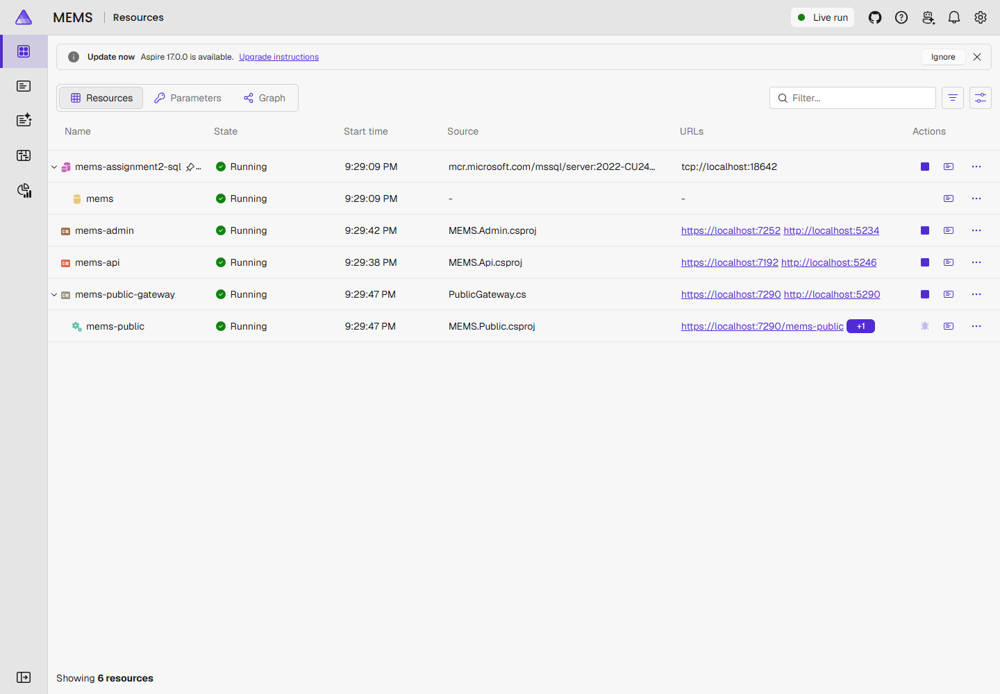
Actual Super Admin dashboard, with database-backed totals after test cleanup.
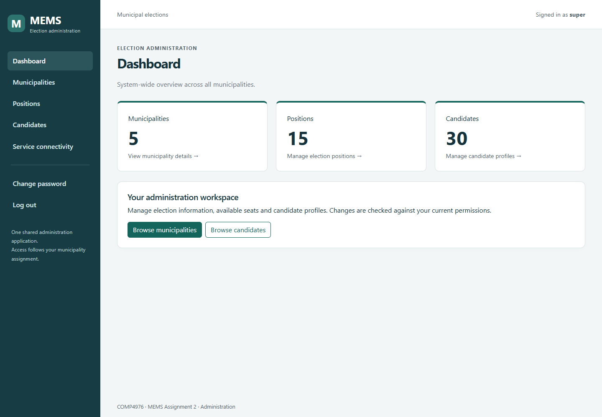
Existing authenticated candidate management interface.
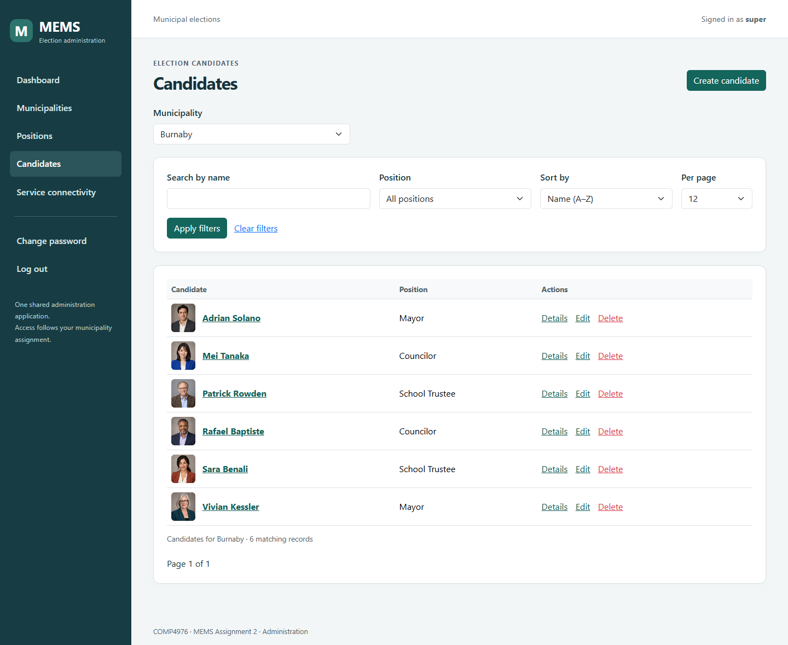
Tenant-scoped WASM candidate directory with existing portraits.
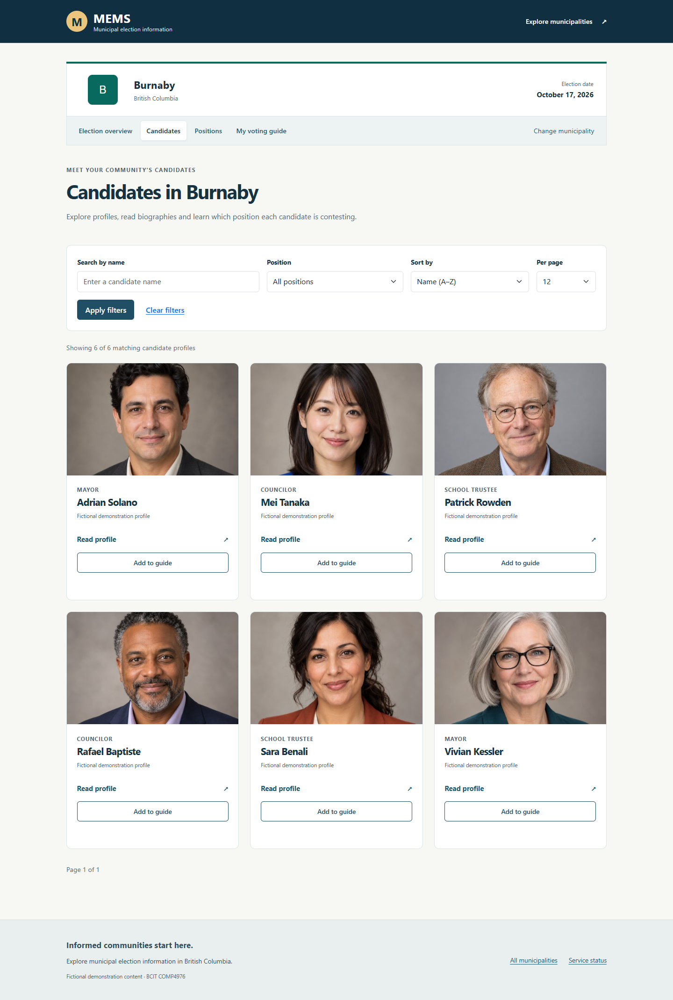
Same reusable app, Surrey records and branding.
Richmond fictional profiles and avatars.
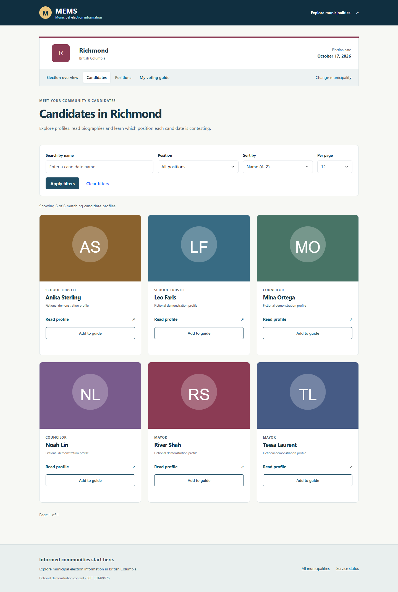
Real anonymous guide. Choices stayed in the browser; this screenshot intentionally records demonstration evidence.
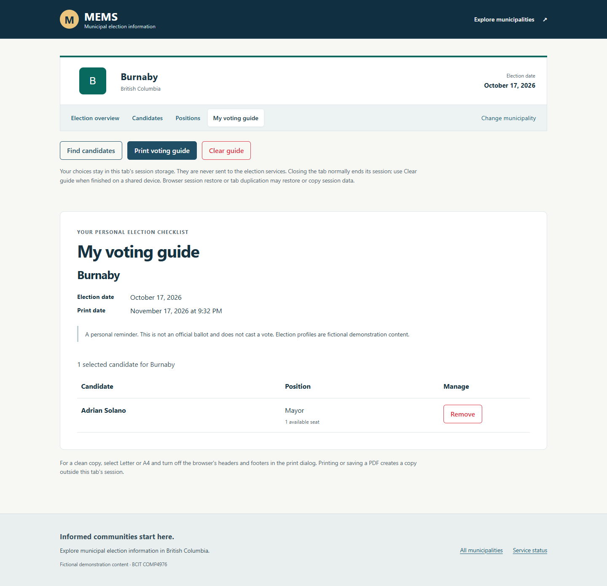
Real locally served API documentation.
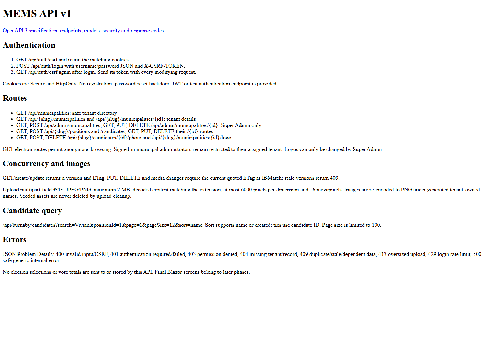
Actual request/status export: 200,400,404,401,403. No cookies or tokens exported.
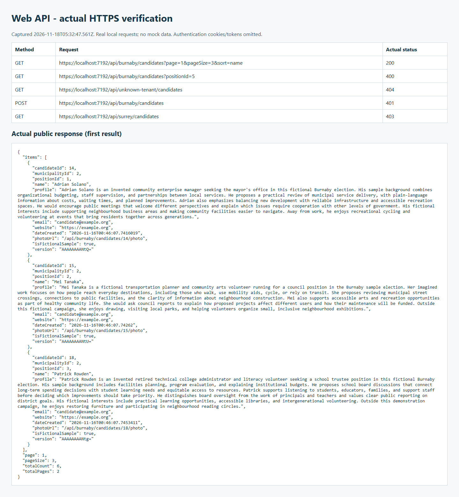
Actual read-only SQL metadata/count results rendered for legibility. No stored Identity row values are shown.
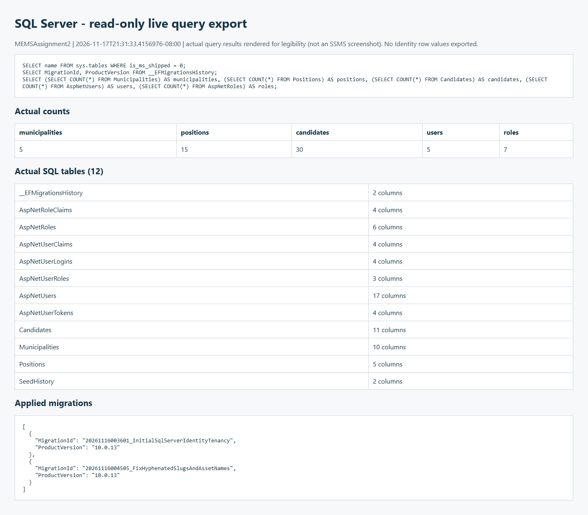